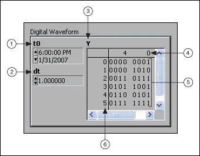
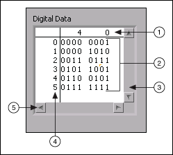
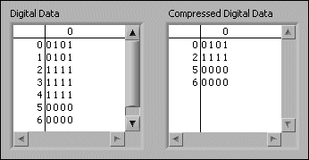

Use the I/O name controls and indicators on the I/O and Classic I/O palettes to pass DAQ channel names, VISA resource names, and IVI logical names you configure to I/O VIs to communicate with an instrument or a DAQ device.
I/O name constants are on the Functions palette. A constant is a terminal on the block diagram that supplies fixed data values to the block diagram.
|
Note��All I/O name controls or constants are available on all platforms, which allows you to develop I/O VIs on any platform that can communicate with devices that are platform specific. However, if you try to run a VI with a platform-specific I/O control on a platform that does not support that device, you receive an error. |
(Windows) Use Measurement & Automation Explorer (MAX), available from the Tools menu, to configure DAQ channel names, VISA resource names, and IVI logical names.
(macOS and Linux) Use the configuration utilities for the instrument to configure VISA resource names and IVI logical names. Refer to the documentation for the instrument for more information about the configuration utilities.
The IMAQ session control is a unique identifier that represents the connection to the hardware.
Use the waveform control to manipulate individual data elements of a waveform. The waveform control carries the data, start time, and delta t of a waveform.
Use the digital waveform control to manipulate the individual elements of a digital waveform. Use the digital waveform control to specify start time, delta t, the data, and the attributes of a digital waveform.
The digital waveform control in the following illustration displays digital data with six samples that each contain eight signals, a start time of 6:00 PM on 1/31/2007, and delta t of 1.
|
 |
||
| 1��Start Time�� | 3��Digital Data�� | 5��Data�� |
| 2��Delta t�� | 4��Signals�� | 6��Samples�� |
The digital data control displays digital data arranged in rows and columns as a digital table. Use the digital data control to build digital waveforms or to display digital data extracted from a digital waveform. Wire the digital waveform data control to a digital data indicator to view the samples and signals of a digital waveform.
The digital data control in the following illustration displays six samples that each contain eight signals.
|
 |
||
| 1��Signals�� | 3��Vertical scroll bar�� | 5��Horizontal scroll bar�� |
| 2��Data�� | 4��Samples�� | |
You can insert and delete rows and columns in the digital data control. Use the shortcut menu to cut, copy, and paste digital data within the control.
You can display the data in the digital data control in binary, hexadecimal, octal, and decimal formats. The digital states L, H, Z, X, T, and V, which are states some measurement devices use, appear as question marks in the control if you choose to display the values in hexadecimal, octal, or decimal format. Right-click the control, select Data Format from the shortcut menu, and select a data format for the control.
The digital data control and digital waveform control contain data in digital tables. A digital table can represent data in eight digital data states. The following table describes the digital data states.
| Value | Digital Data State | Description |
|---|---|---|
| 0 | 0 (Drive Low) | Forces logic low. Drives to the low voltage level (VOL). |
| 1 | 1 (Drive High) | Forces logic high. Drives to the high voltage level (VOH). |
| 2 | Z (Force Off) | Forces logic high impedance. Turns the driver off. |
| 3 | L (Compare Low) | Compares logic low (edge). Compares a voltage level lower than the low voltage threshold. |
| 4 | H (Compare High) | Compares logic high (edge). Compares a voltage level higher than the high voltage threshold. |
| 5 | X (Compare Unknown) | Compares logic unknown. Does not compare. |
| 6 | T (Compare Off) | Compares logic high impedance (edge). Compares a voltage level between the low voltage threshold (VOL) and the high voltage threshold (VOH). |
| 7 | V (Compare Valid) | Compares logic valid level (edge). Compares a voltage level either lower than the low voltage threshold (VOL) or higher than the high voltage threshold (VOH). |
|
Note��You can use the Build Digital Data function to build a digital table. |
You can compress the data in a digital table. Compress digital data when you want to display two or more serial digital signals with the same bit sets on the same row to better visualize the data. For example, if you acquire 10 digital waveform samples and nine waveforms are identical but the tenth waveform differs, compressing the digital data helps you easily find which waveform is different. Compressing digital data also conserves memory resources.
The following illustration shows two digital data tables, each displaying the same data. The first table shows uncompressed digital data. The second table shows the same digital data after compression.

You can use the Digital Waveform VIs and functions to compress, uncompress, and otherwise manipulate digital data and digital waveforms.